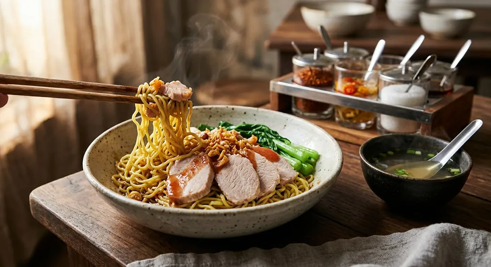

The "dry" order at every Thai noodle stall — springy alkaline egg noodles tossed glossy with dark soy and garlic oil, char siu on top, a tiny bowl of broth on the side, and four condiments to make it yours.

บะหมี่แห้ง is the dry member of the bamee family: the same alkaline egg noodles (บะหมี่ไข่, or the green-tinged jade version, บะหมี่หยก) that swim in broth are instead tossed in a bare handful of seasonings and served sauceless, with a small cup of clear soup on the side. แห้ง — dry — is the word you add to any noodle order when you want the toss, not the soup.
The toss itself is the subject of one of Thai food's favourite questions. On Pantip, a user asks "ทำไมบะหมี่แห้งต้องใส่ซีอิ๊วดำ" — why does dry bamee always have dark soy? — and answers their own question: order it anywhere, every shop does it. Dark soy gives the dry toss its signature gloss: the noodles come to the table lacquered brown-black, savoury-sweet, and impossible to mistake for anything else. Kapook's beef-bowl version tosses the noodles with dark soy plus regular soy sauce; every other recipe shares the oil toss that keeps the strands separate.
The bowl itself is a platform. Cookpad's classic home version plates the double-blanched noodles with red roast pork (หมูแดง), choy sum and red pork gravy. Kapook's roundup of nine bamee dishes shows how far the platform stretches: a minced-beef sauce finished with a raw egg yolk, and a shop-style red-chicken bowl with wontons, fish and prawn balls, a soft-boiled egg and the full condiment set — chilli powder, pickled chilli vinegar, roasted peanuts, sugar and fish sauce. Wongnai's dry tom yum version swaps the dark soy for tom yum seasoning and lime. Even a scrambled egg with suki sauce counts, as one Wongnai home cook proves.
The technique is where they all agree. The noodles get a short blanch — Cookpad goes hot-cold-hot: boil, cold-rinse, re-blanch briefly, out fast — then a toss in oil so they never stick, and the seasoning comes either in the toss or as a ladled sauce. The greens are blanched and shocked. And the bowl always arrives dry, with the broth in a cup, not in the noodles.
| Thai | English | Amount |
|---|---|---|
| บะหมี่ไข่ / บะหมี่หยก | Egg noodles, yellow or jade | 2 cakes (~200 g) |
| น้ำมันกระเทียมเจียว | Fried garlic oil | 2 tbsp, to toss |
| ซีอิ๊วดำ | Dark soy sauce | 1 tsp, to toss |
| ซอสถั่วเหลือง | Soy sauce | 1 tsp, to toss |
| หมูแดง | Red roast pork (char siu) | to taste |
| น้ำราดหมูแดง | Red pork gravy | to taste |
| ผักกวางตุ้ง / คะน้า | Choy sum or kale, blanched | a handful |
| กระเทียมเจียว | Fried garlic | to finish |
| ต้นหอม ผักชี | Spring onion and coriander | to finish |
| พริกป่น พริกน้ำส้ม ถั่วลิสงคั่ว น้ำตาลทราย น้ำปลา | Chilli powder, pickled chilli vinegar, roasted peanuts, sugar, fish sauce | condiment tray |
Cookpad's batch: 500 g of jade noodles for 8 servings, with the char siu and gravy to taste. Kapook's shop-style bowl (red chicken): noodles tossed in fried garlic oil, then red chicken, chicken wontons, fish and prawn balls, a soft-boiled egg and blanched choy sum, ladled with the red chicken sauce and finished with spring onion, chilli powder, pickled chillies, peanuts, sugar and fish sauce. The dry tom yum (Wongnai): the same garlic-oil toss, seasoned with tom yum powder, sugar, chilli powder and lime, mixed with 500 g seasoned minced pork for 2 servings.
How many blanches. Cookpad insists on the hot-cold-hot triple: boil, cold rinse, re-blanch, out fast. Kapook's minced-beef version does a single blanch in salted water with a cold shock. Kapook's bone-sauce version blanches once and goes straight to the oil toss. All three agree on the oil; the extra dip is the home cook's insurance policy.
Where the seasoning lives. The classic is a toss: dark soy and soy sauce straight onto the hot noodles (Kapook), or tom yum powder, sugar, chilli and lime (Wongnai). But the sauce school ladles it over: red pork gravy (Cookpad), a braised pork-bone and shiitake sauce (Kapook), or a red chicken sauce (Kapook). And one Wongnai home cook tosses in scrambled egg and finishes with suki sauce. Same noodles, four different philosophies.
The role of dark soy. The Pantip thread treats dark soy as the defining constant — every shop adds it. Yet Cookpad's classic bowl lists none, letting the char siu gravy carry the colour, and Wongnai's dry tom yum drops it entirely in favour of tom yum seasoning. Constant at the stall, optional in the home kitchen.
The topping. Char siu and gravy (Cookpad), red chicken with wontons and seafood balls (Kapook), minced beef with a raw egg yolk (Kapook), fried squid with scrambled egg (Wongnai), or bones and shiitake (Kapook). The noodles and the toss stay the same; the topping is the cook's signature.
Jade or yellow. Cookpad and the Wongnai home recipe both use บะหมี่หยก, the green-tinged jade noodles; Wongnai's tom yum version and the stalls' standard are plain yellow egg noodles. The jade tint comes from green vegetable juices worked into the dough — cosmetic, but lovers of jade noodles will swear the texture differs.
This recipe is translated from the following Thai-language sources. Where they disagree, we've said so.
1. Cookpad — "สูตร บะหมี่แห้งหมูแดง Egg Dry Noodles With Roast Red Pork" by BJ.cocoacrunchy (the classic bowl used here) — cookpad.com
2. Kapook Cooking — "9 วิธีทำเมนูบะหมี่ ทั้งน้ำ-แห้ง เมนูเส้นเหนียวนุ่ม พร้อมวิธีทำเส้นบะหมี่" (the dark-soy toss, the minced-beef and red-chicken bowls, the condiment tray) — cooking.kapook.com
3. Kapook Cooking — "บะหมี่แห้งราดซอสกระดูกหมูตุ๋นเห็ดหอม จานเด็ดสุดอร่อย" (the bone and shiitake sauce version) — cooking.kapook.com
4. Wongnai — "แจกสูตรฟรี 'บะหมี่แห้งต้มยำหมูบะช่อ' หมูแน่นรสเข้ม ทำง่ายไม่ต้องสับ!" (the dry tom yum variant) — wongnai.com
5. Wongnai UGC — "สูตร บะหมี่แห้ง" by เจ้าโอ (the scrambled-egg home improvisation) — wongnai.com
6. Pantip — "ทำไมบะหมี่แห้งต้องใส่ซีอิ๊วดำ" (the dark soy question) — pantip.com